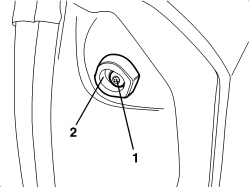
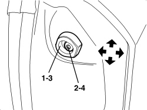

7005A53 ANTI-VIBRATION DOOR STOP (ONE), LEFT OR RIGHT - R.R.
- Path
- Procedures > 70 FITTINGS > 7005 PASSENGER COMPARTMENT FRONT SIDE DOORS > 7005A FRONT DOOR ASSEMBLY > 7005A53 ANTI-VIBRATION DOOR STOP (ONE), LEFT OR RIGHT - R.R.
- Kind
- repair procedure (removal / refitting; the operation number is the code)
- Applies to
- engines: 2.2 JTS, 3.2 JTS; all production periods; only with equipment: Spider
- Interactive page
- https://sloeber94.github.io/elrnDB-aBrrSpdr/en/#/946004060
Applies to: engines: 2.2 JTS, 3.2 JTS; all production periods; only with equipment: Spider
 Removing
Removing
 Refitting
Refitting- Open the door.
1. Undo the bolt.
2. Remove the mounting.

Applies to: engines: 2.2 JTS, 3.2 JTS; all production periods; only with equipment: Spider
Refitting
Removing- Check that the mounting is not damaged.
1. Position the mounting.
2. Screw in the bolt without tightening it.
3. Move the door closer and adjust the position of the mounting in relation to the housing in the door. If necessary, adjust the position of the mounting.
4. After adjustment, tighten the bolt.
Component | Fastening | dia | Value (daNm) | Validity |
|---|---|---|---|---|
DOOR STOP MOUNTING | Bolt | - | 2.2 ÷ 2.6 | Spider |
